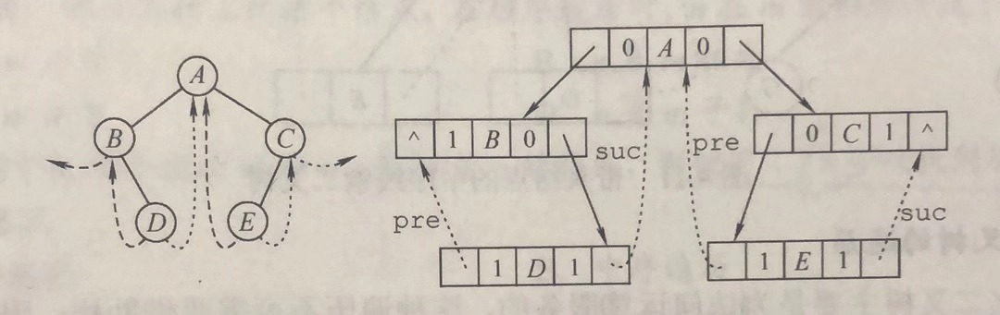
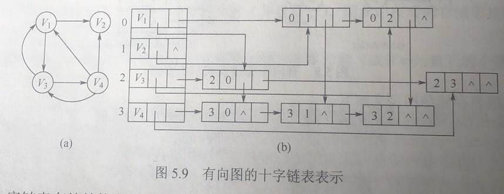
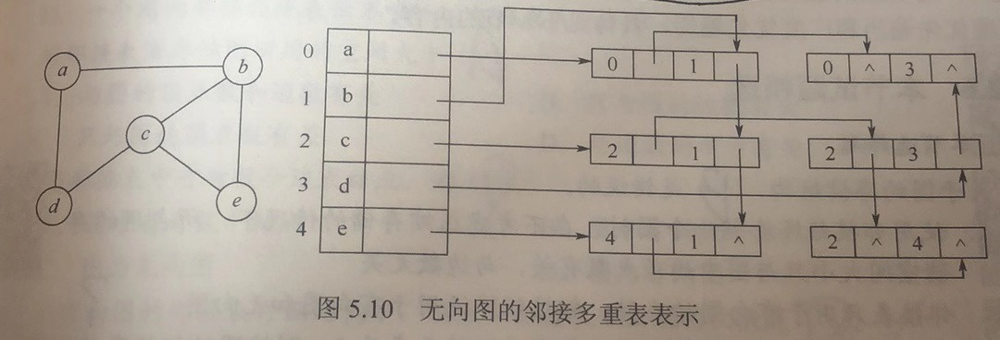
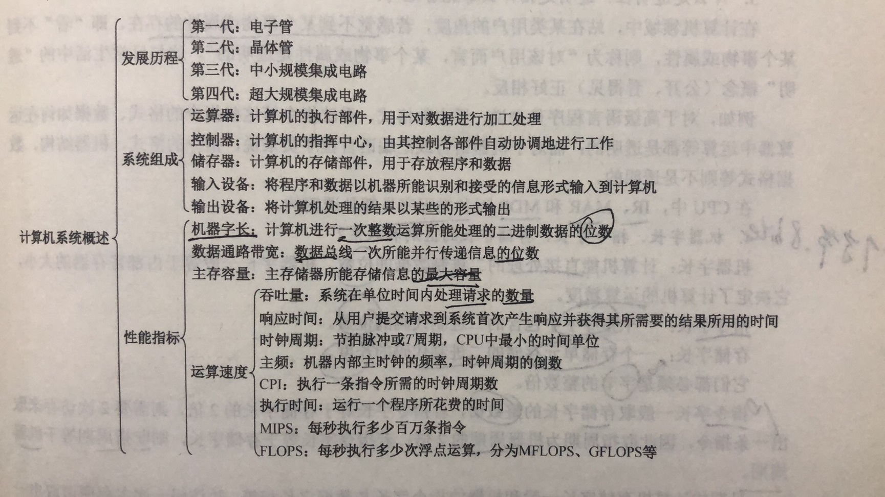

title: PAT
date: 2020-01-06 07:26:48
tags:
Morning Reading
- 数据结构（45）
- 计算机组成原理（45）
- 计算机网络（25）
- 计算机操作系统（35）
Data Structure
大纲
[考查目标]
1。掌握数据结构的基本概念、基本原理和基本方法。
2。掌握数据的逻辑结构、存储结构及基本操作的实现，能够对算法进行基本的时间复
杂度与空间复杂度的分析。
3。能够运用数据结构基本原理和方法进行问题的分析与求解，具备采用 C 或 C++语言
设计与实现算法的能力。
一、线性表
（一）线性表的定义和基本操作
（二）线性表的实现
1。顺序存储
2。链式存储
3。线性表的应用
二、栈、队列和数组
（一）栈和队列的基本概念
（二）栈和队列的顺序存储结构
（三）栈和队列的链式存储结构
（四）栈和队列的应用
（五）特殊矩阵的压缩存储
三、树与二叉树
（一）树的基本概念
（二）二叉树
1。二叉树的定义及其主要特征
2。二叉树的顺序存储结构和链式存储结构
3。二叉树的遍历
4。线索二叉树的基本概念和构造
（三）树、森林
1。树的存储结构
2。森林与二叉树的转换
3。树和森林的遍历
（四）树与二叉树的应用
1。二叉排序树
2。平衡二叉树
3。哈夫曼（Huffman）树和哈夫曼编码
四、图
（一）图的基本概念
（二）图的存储及基本操作
1。邻接矩阵法
2。邻接表法
3。邻接多重表、十字链表
（三）图的遍历
1。深度优先搜索
2。广度优先搜索
（四）图的基本应用
1。最小（代价）生成树
2。最短路径
3。拓扑排序
4。关键路径
五、查找
（一）查找的基本概念
（二）顺序查找法
（三）分块查找法
（四）折半查找法
（五）B 树及其基本操作、B+树的基本概念
（六）散列（Hash）表
（七）字符串模式匹配
（八）查找算法的分析及应用
六、排序
（一）排序的基本概念
（二）插入排序
1。直接插入排序
2。折半插入排序
（三）气泡排序（bubble sort）
（四）简单选择排序
（五）希尔排序（shell sort）
（六）快速排序
（七）堆排序
（八）二路归并排序（merge sort）
（九）基数排序
（十）外部排序
（十一）各种内部排序算法的比较
（十二）排序算法的应用
Introduction
graph LR
A(绪论) --- B(数据结构)
B --- B1(逻辑结构)
B --- B2("存储结构(物理结构)")
B --- B3(数据的运算)
B1 --- B11("线性结构: 线性表, 栈, 队列")
B1 --- B12("非线性结构: 树, 图, 集合")
A --- C(五个特征)
C --- C1(算法定义)
C --- C2("五个特性: 有穷, 确定, 可行, 输出, 输出")
C --- C3(效率的度量)
C3 --- C11(时间复杂度)
C3 --- C12(空间复杂度)
基本概念和术语
数据, 数据元素, 数据对象, 数据类型, 抽象数据类型, 数据结构
抽象数据类型(ADT): 指一个数据模型及定义在该模型上的一组操作; 其定义仅取决于它的一组逻辑特性; 常用(数据对象, 数据关系, 基本操作集)表示
数据结构是相互之间存在一种或多种特定关系的数据元素的集合。包含三方面内容(逻辑结构, 存储结构和数据运算)
算法和算法评价
时间复杂度
算法中所有语句的频度之和记为 T(n), 时间复杂度主要分析 T(n)的数量级。
常用算法中基本运算的频度 f(n)来分析算法的时间复杂度. 记为 T(n) = O(f(n))
常见的渐近时间复杂度为:
O(1) < O($log{2}n$) < O(n) < O($nlog{2}n$) < O($n^2$) < O($n^3$) < O($2^n$) < O($n!$) < O($n^n$)
空间复杂度
Linear List
graph LR
A(线性表) --- B(顺序存储)
B --- B1(顺序表)
A(线性表) --- C(链式存储)
C --- C1(单链表)
C1 --- C5(指针实现)
C --- C2(双链表)
C2 --- C5
C --- C3(循环链表)
C3 --- C5(指针实现)
C --- C4("静态链表(借助数组实现)")
顺序存储
- 线性表中的位序从1开始，数组中的元素的下标是从0开始的
- 主要特点: 随机访问，即通过首地址和元素序号可在时间O(1)内找到指定元素。
- 存储密度高，每个节点只存储输出元素
- O(n) 插入，删除，顺序查找
链式存储
链表，无论单链表，双链表还是循环链表，一定要保证不断链。
单链表
定义
typedef struct LNode{
ElemType data;
struct LNode *next;
}LNode, *LinkList
```
不管带不带头结点，头指针始终指向链表的第一个结点
头结点是带头结点的链表中的第一个结点，结点内通常不存储信息。(加入头结点，空表和非空表的处理得到统一)
O(n)
- 头插法建立单链表
- 尾插发建立单链表
- 按序号查找结点值
- 按值查找表结点
- 插入结点操作
- 删除结点操作
- 求表长操作
双链表
循环单链表
静态链表
借助数组来描述线性表的链式存储结构，这里的指针是结点的相对地址(数组下标)，又称游标。
如何选取存储结构
Stack and Queue
复习提示
- 本章通常以选择题的形式考查，题目不算难，但命题形式灵活，也容易出现在算法设计题中。
- 其中栈(出入栈的过程、出栈序列的合法性) 和 队列的操作及其特征是重点。
- 此外，栈和队列的顺序存储结构、链式存储结构及其特点、双端队列的特点、栈和队列的常见应用，以及数组和特殊矩阵的压缩存储都是读者必须掌握的内容。
graph LR
A(线性表)-- 操作受限 ---B1(栈)
B1 --- B11(顺序栈)
B1 --- B12(链栈)
B1 --- B13(共享栈)
A(线性表)-- 操作受限 ---B2(队列)
B2 --- B21(循环队列)
B2 --- B22(链式队列)
B2 --- B23(双端队列)
A-- 推广 ---C(数组)
C --- C1(一维数组)
C --- C2("多维数组: 压缩存储, 稀疏矩阵")
栈
栈(Stack) 只允许在一端进行插入或删除操作的线性表。
队列
队列(Queue) 只允许在表的一端进行插入，而在表的另一端进行删除
队列的顺序存储
#define MaxSize 50
typedef struct{
ElemType data[MaxSize];
int front, rear;
} SqQueue;
存在 假溢出 的现象
循环队列
初始时: Q.font=Q.rear=0
队首指针进1: Q.front=(Q.front+1)%MaxSize
队尾指针进1: Q.rear=(Q.rear+1)%MaxSize
队列长度: (Q.rear+MaxSize-Q.front)%MaxSize
区分队满还是队空，三种处理方式:
(普遍)牺牲一个存储单元来区分队空和队满，即队头指针在队尾指针的下一位置作为队满的标志
队满条件: (Q.rear+1)%MaxSize==Q.front
队空条件: Q.front==Q.rear
类型中增设表示元素个数的数据成员
队空条件: Q.size==0
队满条件: Q.size==MaxSize
队满队空都有Q.front==Q.rear
类型中增设tag数据成员，以区分是队满还是队空。
- tag等于0时，若因删除导致Q.front==Q.rear，则为队空。
- tag等于1时，若因插入导致Q.front==Q.rear, 则为队满。
队列的链式存储
typedef struct{
ElemType data;
struct LinkNode *next;
} LinkNode;
typedef struct{
LinkNode *front, *rear;
} LinkQueue;
- 当Q.front==NULL 且Q.rear==NULL时, 链式队列为空
- 用单链表表示的链式队列特别适合于数据元素变动比较大的情形，而且不存在队列满且产生溢出的问题。
双端队列
输出受限的双端队列，输入受限的双端队列
- 能由输入受限的双端队列得到，但不能由输出受限的双端队列得到的输出序列。4132
- 能由输出受限的双端队列得到，但不能有输入受限的双端队列得到的输出序列。4213
- 既不能由输入受限的双端队列得到，又不能由输出受限的双端队列得到的输出序列。4231
栈和队列的应用
- 栈在括号匹配中的应用
- 栈在表达式求值中的应用
- 栈在递归中的应用
- 队列在层次遍历中的应用
- 队列在计算机系统中的应用
特殊矩阵的压缩存储
即最小空间存储矩阵，矩阵在计算机图形学，工程计算中占有举足轻重的地位。数据结构考虑的是如何用最小的内存空间来存储同样一组数据，并能方便地提取矩阵中的元素。
数组一旦被定义，其维数和维界就不再改变。
- 数组的存储结构
- 一个数组的所有元素在内存中占用一段连续的存储空间。
- 矩阵的压缩存储
- 稀疏矩阵
总结
在考研真题中，链式栈出现的概率要比顺序栈低得多。
Tree and Binary Tree
复习提示
- 本章多以选择题的形式考查，但也会涉及树遍历相关的算法题
- 树和二叉树的性质、遍历操作、转换、存储结构和操作特性等
- 满二叉树、完全二叉树，线索二叉树、哈夫曼树的定义和性质
- 二叉排序树和二叉平衡树的性质和操作等，都是选择题必然会涉及的内容
graph LR
A(树形结构) --- B(二叉树)
B --- B1("概念: 定义, 存储结构")
B --- B2("操作")
B --- B3("应用")
B2 --- B21("三种遍历")
B2 --- B22("线索二叉树")
B3 --- B31("排序二叉树 ---- 平衡二叉树")
B3 --- B32(哈夫曼树)
A(树形结构) --- C(树和森林)
C --- C1("概念: 定义, 存储结构")
C --- C2(操作)
C2 --- C21(与二叉树的转换)
C2 --- C22(遍历)
C --- C3("应用: 并查集")
树具有如下最基本的性质:
- 树种的结点树等于所有结点的度数加 1。
- 度为 m 的树种第 i 层上至多有 $m^{i-1}$ 个结点。(i $\ge$ 1)
- 高度为 h 的 m 叉树至多有 $(m^h-1)/(m-1)$ 个结点
- 具有 n 个结点的 m 叉树的最小高度为 $\lceil log_m{(n(m-1)+1)} \rceil$
树结点与度之间的关系有:
- 总结点数 = $n_0+n_1+n_2+…+n_m$
- 总分支数 = $1n_1+2n_2+…+mn_m$
- 总结点数 = 总分支数 + 1
二叉树
二叉树的遍历
按照某条搜索路径访问树中的每个结点，使得每个结点均被访问一次，而且仅被访问一次。
线索二叉树
线索，指向前驱或后继的指针。
typedef struct ThreadNode {
ElemType data;
struct ThreadNode *lchild, *rchild; // 左右孩子指针
int ltag, rtag;
} ThreadNode, *ThreadTree;
线索二叉树的构造

void InThread(ThreadTree &p, ThreadTree &pre) {
// 中序遍历对二叉树线索化的递归算法
if (p != NULL) {
InThread(p->lchild, pre);
if (p->lchild == NULL) {
p->lchild = pre;
p->ltag = 1;
}
if (pre != NULL && pre->rchild==NULL) {
pre->rchild = p;
pre->rtag = 1;
}
pre = p;
InThread(p->rchild, pre);
}
}
void CreateInThread(ThreadTree T) {
ThreadTree pre=NULL;
if (T != NULL) {
InThread(T, pre);
pre->rchild=NULL;
pre->rtag=1;
}
}
树,森林
存储结构
双亲表示法
#define MAX_TREE_SIZE 100
typedef struct {
ElemType data;
int parent;
} PTNode;
typedef struct {
PTNode nodes[MAX_TREE_SIZE];
int n;
}PTree;
孩子表示法
孩子兄弟表示法, 又称二叉树表示法
typedef struct CSNode {
ElemType data;
struct CSNode *firstchild, *nextsibling;
} CSNode, *CSTree
树，森林和二叉树的转换
树和森林的遍历
树的应用 —— 并查集
树和二叉树的应用
总结
- 本章的内容较多，其中二叉树是极其重要的考点。
- 遍历是二叉树的各种操作的基础，统考时会考察遍历过程中对结点的各种其他操作，而且容易结合递归算法和利用栈或队列的非递归算法。
- 读者需重点掌握各种遍历方法的代码书写，并学会在遍历的基础上，进行一些其他的相关操作。
- 其中递归算法短小精悍，出现的概率较大，请读者不要掉以轻心，要做到对几种遍历方式的程序模板烂熟于心，并结合一定数量的习题，才可以在考试中快速地写出漂亮的代码。
Graph
图$G$由顶点集$V$和边集$E$组成，记为$G=(V，E)$。有向图$: v为弧尾，w为弧头$。无向图$(v, w)$
复习提示
- 图算法的难度较大，因此主要掌握深度优先搜索与广度优先搜索，其他内容以算法题形式出现的概率不高。
- 应掌握
- 图的基本概念及基本性质、
- 图的存储结构（邻接矩阵、邻接表、邻接多重表和十字链表）及其特性
- 存储结构之间的转化
- 基于存储结构上的遍历操作和各种应用(拓扑排序、最小生成树、最短路径和关键路径)
- 图的相关算法较多、易混，但通常只要求掌握其基本思想和实现步骤(能手动模拟)，而算法的具体实现则不是重点
graph LR
A(图) --- B(图的定义)
A(图) --- C(图结构的存储)
C --- C1("邻接矩阵法, 邻接表法")
C --- C2("邻接多重表法, 十字链表")
A(图) --- D(图的遍历)
D --- D1(深度优先遍历)
D --- D2(广度优先遍历)
A(图) --- E(图的相关应用)
E --- E1("最小生成树: Prim算法, Kruskal算法")
E --- E2("最短路径: Dijkstr算法, Floyd算法")
E --- E3("拓扑排序: AOV网")
E --- E4("关键路径: AOE网")
定义
图的存储及基本操作
临接矩阵法，指用一个一维数组存储图中顶点信息，用一个二维数组存储图中边的信息(即各顶点之间的临接关系)，存储顶点之间临接关系的二维数组称为邻接矩阵。
#define MaxVertexNum 100 // 图顶点数目的最大值
typedef char VertexType; // 顶点的数据类型
typedef int EdgeType; // 带权图中边上权值的数据类型
typedef struct {
VertexType Vex[MaxVertexNum]; // 顶点表
EdgeType Edge[MaxVertexNum][MaxVertexNum]; // 邻接矩阵，边表
int vexnum, arcnum; // 图的当前顶点数和弧数
} MGraph;
- 邻接矩阵表示法的空间复杂度为$O(n^2)$，其中 n 为图的顶点数$\vert V \vert$
- 1 为存在边，0 为不存在边
邻接表法，是对图$G$中的每个顶点$v_i$建立一个单链表，这个单链表称为边表。边表的头指针和顶点的数据信息采用顺序存储（称为顶点表）。

#define MaxVertexNum 100 // 图中顶点数目的最大值
typedef struct ArcNode { // 边表结点
int adjvex; // 该弧所指向的顶点的位置
struct ArcNode *next; // 指向下一条弧的指针
// InfoType info; // 网的边权值
}ArcNode;
typedef struct VNode { // 顶点表结点
VertexType data; // 顶点信息
ArcNode *first; // 指向第一条依附该顶点的弧的指针
}VNode, AdjList[MaxVertexNum];
typedef struct {
AdjList vertices; // 邻接表
int vexnum, arcnum; // 图的顶点数和弧数
} ALGraph; // ALGraph是以邻接表存储的图类型
- 顶点表结点 [ 顶点域(data)，边表头指针(firstarc) ]，边表结点 [ 邻接点域(adjvex)，指针域(nextarc)]
十字链表，是有向图的一种链式存储结构

#define MaxVertexNum 100 // 图中顶点数目的最大值
typedef struct ArcNode { // 边表结点
int tailvex, headvex; // 该弧的头尾结点
struct AcrNode *hlink, *tlink; // 分别指向弧头相同和弧尾相同的结点
// InfoType info; // 相关信息指针
} ArcNode;
typedef struct VNode { // 顶点表结点
VertexType data; // 顶点信息
ArcNode *firstin, *firstout; // 指向第一条入弧和出弧
} VNode;
typedef struct {
VNode xlist[MaxVertexNum]; // 邻接表
int vexnum, arcnum; // 图的顶点数和弧数
} GLGraph; // GLGraph 是以十字邻接存储的图类型
- 顶点结点 [data，firstin，firstout]
- 弧结点 [tailvex，headvex，hlink，tlink，info]
邻接多重表，是无向图的另一种链式存储结构。

#define MaxVertexNum 100 // 图中顶点数目的最大值
typedef struct ArcNode { // 边结点
bool mark; // 访问标记
int ivex, jvex; // 分别指向该弧的两个结点
struct ArcNode *ilink, *jlink; // 分别指向两个顶点的下一条边
// InfoType info; // 相关信息指针
} ArcNode;
typedef struct VNode {
VertexType data; // 顶点表结点
ArcNode *firstedge;
} VNode;
typedef struct {
VNode adjmulist[MaxVertexNum];
int vexnum, arcnum;
} AMLGraph;
- 顶点结点 [data，firstedge]
- 边结点 [mark，ivex，ilink，jvex，jlink，info]
图的基本操作
- Adjacent(G, x, y)
- Neighbors(G, x)
- InsertVertex(G, x)
- DeleteVertex(G, x)
- AddEdge(G, x, y)
- RemoveEdge(G, x, y)
- FirstNeighbor(G, x): 存在，返回顶点号，不存在，返回 -1.
- NextNeighbor(G, x, y): 存在，返回顶点号，不存在，返回 -1.
- Get_edge_value(G, x, y)
- Set_edge_value(G, x, y, v)
图的遍历
- Intro
- 图的遍历是指从图中的某一顶点出发，按照某种搜索方法沿着图中的边对图中的所有顶点访问一次且仅访问一次。
- 树是一种特殊的图。
- 几乎所有图的搜索算法，都可以抽象为优先级搜索或最佳优先搜索。
对于同样一个图，基于邻接矩阵存储的遍历所得到的DFS序列和BFS序列是唯一的，基于邻接表的遍历所得到的DFS和BFS序列是不唯一的。
广度优先搜索，(Breadth-First-Search, BFS)
info
- 会优先考虑最早被发现的顶点，也就是离起点越近的顶点其优先级越高。
- 类似于二叉树的层序遍历算法，借助队列。
- Dijkstra 单源最短路径算法和 Prim最小生成树算法也应用了类似的思想。
- 图的广度优先遍历还可用于求一些问题的最优解，但初试方面很难涉及。
- 邻接表存储$O(\vert V \vert+\vert E \vert)$；邻接矩阵存储$O(\vert V \vert^2)$。
- 在广度遍历的过程中，我们可以得到一颗遍历树，称为广度优先生成树。
广度优先所有算法的伪代码如下：
bool visited[MAX_VERTEX_NUM];
void BFSTraverse(Graph G) {
// 对图G进行广度优先遍历，设访问函数为visit()
for (i=0; i<G.vexnum; ++i)
visited[i] = false; // 访问标记数组初始化
InitQueue(Q); // 初始化辅助队列Q
for (i=0; i<G.vexnum; ++i) // 从 0 号顶点开始遍历
if (!visited[i]) // 对每个连通分量调用一次BFS
BFS(G, i); // Vi未访问过，从Vi开始BFS
}
void BFS(Graph G, int v) {
visit(v); // 访问初始顶点v
visited[v] = true; // 对v做已访问标记
Enqueue(Q, v); // 顶点 v 入队列
while(!isEmpty(Q)) {
DeQueue(Q, v); // 顶点 v 出队列
for (w=FirstNeighbor(G, v); w>=0; w=NextNeighbor(G, v, w)
// 检测 v 所有邻接点
if (!visited[w]) { // w 为 v 的尚未访问的邻接顶点
visit(w); // 访问顶点 w
visited[w] = true; // 对w做已访问标记
EnQueue(Q, w);
} //if
} // while
}
BFS算法求解单源最短路径问题(最少边数，非带权)
void BFS_MIN_Distance(Graph G, int u) {
//d[i]表示从 u 到 i 结点的最短路径
for (i=0; i<G.vexnum; ++i)
d[i] = ∞; // 初始化路径长度
visited[u] = true; d[u] = 0;
EnQueue(Q, u);
while(!isEmpty(Q)) { // BFS算法主过程
DeQueue(Q, u); // 队头元素出队
for (w=FirstNeighbor(G, u); w>=0; w=NextNeighbor(G, u, w))
if (!visited[w]) { // w为u的尚未访问的邻接顶点
visited[w] = true; // 设已访问标记
d[w] = d[u] + 1; // 路径长度加1
EnQueue(Q, w); // 顶点w入队
} // if
} //while
}
图的应用
本节是历年考查重点。图的应用主要包括: 最小生成(代价)树，最短路径，拓扑排序和关键路径。一般，直接以算法设计题形式考查的可能性很小，而更多的是结合图的实例来考查算法的具体执行过程，读者必须学会手工模拟给定图的各个算法的执行过程。此外，还需掌握对给定模型建立相应的图去解决问题的方法。
Searching
复习提示
本章是考研命题的终点
- 对应散列查找，应掌握散列表的构造、冲突处理方法(各种方法的处理过程)、查找成功和查找失败的平均查找长度、散列查找的特征和性能分析。
- 对于折半查找，应掌握折半查找的过程、构造判定树、分析查找成功和查找失败的平均查找长度等
- B树和B+ 树是本章的难点，对于B树，考纲要求掌握插入、删除和查找的操作过程，不要求掌握算法；对于B+ 树，仅要求了解其基本概念和性质。
- 串部分需要重点掌握next数组的构造方法。
graph LR
A(查找) --- B("基本概念: 静态查找, 动态查找")
A --- C(线性结构)
C --- C1(顺序查找)
C --- C2(折半查找)
C --- C3(分块查找)
A --- D(树形结构)
D --- D1(二叉排序树)
D --- D2(二叉平衡树)
D --- D3(B树, B+树)
A --- E("散列结构 ---- 散列表")
E --- E1(性能分析)
E --- E2(冲突处理)
A --- F("效率指标 --- 平均查找长度")
F --- F1(查找成功)
F --- F2(查找失败)
基本概念
- 查找，查找表，
- 静态查找：顺序查找，折半查找，散列查找等
- 动态查找：二叉排序树的查找，散列查找。（二叉平衡树和B树都是二叉排序树的改进）
- 关键字，平均查找长度(ASL，衡量查找算法效率的最主要的指标)
顺序查找
又称线性查找，主要用于在线性表中进行查找。
折半查找
又称二分查找，仅适用于有序的顺序表。
算法
int Binary_Search(SeqList L, ElemType key) {
int low=0, high=L.Tablelen-1, mid;
while (low<=high) {
mid=(low+high)/2;
if (L.elem[mid] == key)
return mid;
else if (L.elem[mid] > key)
high=mid-1;
else
low=mid+1;
}
return -1;
}
- $ASL\approx log_2(n+1)-1$，判定树种的树高$h=\lceil log_2(n+1) \rceil$
- 即$O(log_2n)$，平均情况下比顺序表查找的效率高。
- 折半查找仅适用于线性表的顺序存储结构，不适合与链式存储结构，且要求元素按关键字有序排列。
分块查找
B树
B+树
散列表
串
Sorting
复习提示
- 堆排序（建堆、插入和调整）、快速排序（划分、过程特征）、归并排序（归并路数、归并过程）是重点。
- 读者应深入掌握各种排序算法的思想、排序过程(能动手模拟) 和特征（初态的影响、时空复杂度、稳定性、适用性等）
- 常以选择题的形式考查不同算法之间的对比
- 对于一些常用排序算法的关键代码，要达到熟练编写的程度；
- 看到某特定序列，读者应具有选择最优排序算法（根据排序算法特征）的能力。
graph LR
A(排序) --- B(基本概念)
B --- B1(稳定性)
B --- B2("衡量标准: 时,空复杂度")
A --- C(内部排序)
C --- C1(插入排序)
C1 --- C11(直接插入排序)
C1 --- C12(折半插入排序)
C1 --- C13(希尔排序)
C --- C2(交换排序)
C2 --- C21(冒泡排序)
C2 --- C22(快速排序)
C --- C3(选择排序)
C3 --- C31(简单选择排序)
C3 --- C32(堆排序)
C --- C4(归并排序)
C --- C5(基数排序)
A --- D("外部排序----多路归并排序")
插入排序
直接插入排序
void InsertSort(ElemType A[], int n) {
int i,j;
for (i=2; i<=n; i++) { // 依次将A[2] ~ A[n]插入到前面已排序序列
if (A[i].key < A[i-1].key)
A[0]=A[i];
for (j=i-1; A[0].key < A[j].key; --j)
A[j+1]=A[j]; // 向后挪位
A[j+1]=A[0];
}
}
折半插入排序
void InsertSort(ElemType A[], int n) {
int i,j,low,high,mid;
for (i=2; i<=n; i++) { // 依次将A[2] ~ A[n]插入到前面已排序序列
A[0]=A[i];
low=1; high=i-1;
while (low <= high) {
mid=(low+high)/2;
if (A[mid].key > A[0].key) high=mid-1;
else low=mid+1;
}
for (j=i-1; j>=high+1; --j)
A[j+1]=A[j];
A[high+1]=A[0];
}
}
希尔排序
void ShellSort(ElemType A[], int n) {
for (dk=n/2; dk>=1; dk=dk/2)
for (i=dk+1; i<=n; ++1)
if(A[i].key < A[i-dk].key) {
A[0]=A[i];
for (j=i-dk; j>0&&A[0].key < A[j].key; j-=dk)
A[j+dk]=A[j];
A[j+dk]=A[0];
}//if
}
交换排序
冒泡排序
void BubbleSort(ElemType A[], int n) {
for (i=0; i<n-1; i++) {
flag=false;
for(j=n-1; j>i; j--)
if (A[j-1].key > A[j].key) {
swap(A[j-1], A[j]);
flag=true;
}
if (flag==false)
return;
}
}
快速排序
void QuickSort(ElemType A[], int low, int high) {
if (low<high) {
int pivotpos=Partition(A, low, high);
QuickSort(A, low, pivotpos-1);
QuickSort(A, pivotpos+1, high);
}
}
int partition(ElemType A[], int low, int high) {
ElemType pivot=A[low];
while(low<high) {
while(low<high&&A[high] >= pivot) --high;
A[low]=A[high];
while(low<high&&A[low] <= pivot) ++low;
A[high]=A[low];
}
A[low]=pivot;
return low;
}
选择排序
归并排序
基数排序
各种内部排序算法的比较和应用
外部排序
小结
Principles of Computer Composition
大纲
[考查目标]
1。理解单处理器计算机系统中各部件的内部工作原理、组成结构以及相互连接方式，
具有完整的计算机系统的整机概念。
2。理解计算机系统层次化结构概念，熟悉硬件与软件之间的界面，掌握指令集体系结
构的基本知识和基本实现方法。
3。能够综合运用计算机组成的基本原理和基本方法，对有关计算机硬件系统中的理论
和实际问题进行计算、分析，对一些基本部件进行简单设计；并能对高级程序设计语言（如
C 语言）中的相关问题进行分析。
一、计算机系统概述
（一）计算机发展历程
（二）计算机系统层次结构
- 计算机系统的基本组成
计算机硬件的基本组成
计算机软件和硬件的关系
计算机的工作过程
（三）计算机性能指标
吞吐量、响应时间；CPU 时钟周期、主频、CPI、CPU 执行时间；MIPS、MFLOPS 、GFLOPS、
TFLOPS、PFLOPS。
二、数据的表示和运算
（一）数制与编码
1。进位计数制及其相互转换
2。真值和机器数
3.BCD 码
- 字符与字符串
5。校验码
（二）定点数的表示和运算
1。定点数的表示
无符号数的表示；有符号整数的表示。
2。定点数的运算
定点数的位移运算；原码定点数的加减运算；补码定点数的加/减运算；定点数的乘/
除运算；溢出概念和判别方法。
（三）浮点数的表示和运算
1。浮点数的表示
IEEE 754 标准
2。浮点数的加/减运算
（四）算术逻辑单元 ALU
1。串行加法器和并行加法器
2。算术逻辑单元 ALU 的功能和结构
三、存储器层次结构
（一）存储器的分类
（二）存储器的层次化结构
（三）半导体随机存取存储器
1.SRAM 存储器
2.DRAM 存储器
3。只读存储器
4.Flash 存储器
（四）主存储器与 CPU 的连接
（五）双口 RAM 和多模块存储器
（六）高速缓冲存储器（Cache）
1.Cache 的基本工作原理
2.Cache 和主存之间的映射方式
3.Cache 中主存块的替换算法
4.Cache 写策略
（七）虚拟存储器
1。虚拟存储器的基本概念
2。页式虚拟存储器
3。段式虚拟存储器
4。段页式虚拟存储器
5.TLB（快表）
四、指令系统
（一）指令格式
1。指令的基本格式
2。定长操作码指令格式
3。扩展操作码指令格式
（二）指令的寻址方式
1。有效地址的概念
2。数据寻址和指令寻址
3。常见寻址方式
（三）CISC 和 RISC 的基本概念
五、中央处理器（CPU）
（一）CPU 的功能和基本结构
（二）指令执行过程
（三）数据通路的功能和基本结构
（四）控制器的功能和工作原理
1、硬布线控制器
2、微程序控制器
微程序、微指令和微命令；微指令的编码方式；微地址的形式方式。
（五）指令流水线
1、指令流水线的基本概念
2、指令流水线的基本实现
3、超标量和动态流水线的基本概念
六、总线
（一）总线概述
1、总线的基本概念
2、总线的分类
3、总线的组成及性能指标
（二）总线仲裁
1、集中仲裁方式
2、分布仲裁方式
（三）总线操作和定时
1、同步定时方式
2、异步定时方式
（四）总线标准
七、输入输出（I/O）系统
（一）I/O 系统基本概念
（二）外部设备
1、输入设备：键盘、鼠标
2、输出设备：显示器、打印机
3、外存储器：硬盘存储器、磁盘阵列、光盘存储器
（三）I/O 接口（I/O 控制器）
1、I/O 接口的功能和基本结构
2、I/O 端口及其编址
（四）I/O 方式
1、程序查询方式
2、程序中断方式
中断的基本概念；中断响应过程；中断处理过程；多重中断和中断屏蔽的概念。
3、DMA 方式
DMA 控制器的组成，DMA 传送过程。
一、计算机系统概述
复习提示
重点掌握各个性能指标的计算和基本概念。

概念
小记
英文缩写
存储器
- MAR - 地址寄存器，多少个存储单元，即为内存
- MDR - 数据寄存器，64k x 32位，即为存储容量
运算器
- ALU - 算术逻辑单元
- ACC - 累加器
- MQ - 乘商寄存器
- X - 操作数寄存器
- IX - 变址寄存器
- BR - 基址寄存器
- PSW - 程序状态寄存器
- 控制器
- PC - 程序计数器
- IR - 指令寄存器，OP-操作码，Ad - 地址码
- CU - 控制单元
性能指标
机器字长，计算机能直接处理的二进制数据的位数，一般等于内部寄存器的大小，决定计算机的运算精度。
数据通路带宽，数据总线一次所能并行传送信息的位数。（外部）
主存容量，指主存储器所能存储信息的最大容量，MAR的位数反映存储单元的个数。
运算速度
吞吐量，指系统在单位时间内处理请求的数量。主要取决于主存的存取周期
响应时间，
CPU时钟周期，常为节拍脉冲或T周期，即主频的倒数，是CPU中最小的时间单位，每个动作至少需要1个时钟周期。
主频（CPU时钟频率），衡量机器速度的重要参数，主频越高，速度越快。1Hz表示每秒1次。
CPI（Clock cycle Per Instruction），指执行一条指令所需的时钟周期数。
CPU执行时间，指运行一个程序所花费的时间
CPU执行时间=CPU时钟周期数 / 主频=（指令条数 x CPI）/ 主频
MIPS、MFLOPS(百万)、GFLOPS(十亿)、TFLOPS(万亿)
Others

三种语言
机器语言，汇编语言(汇编程序)，高级语言(编译-汇编 | 翻译)
计算机的工作过程
取指令：(PC) -> MAR -> M -> MDR -> IR
分析指令: OP(IR) -> CU
执行指令: Ad(IP) -> MAR -> M -> MDR -> ACC
: (PC)+1 -> PC
计算机系统的多层次结构
微程序机器层 - 传统机器语言层 - 操作系统层 - 汇编语言层 - 高级语言层.
“裸机” - 没有配备软件的纯硬件系统，3-5层称为虚拟机
计算机体系结构和计算机组成的区别和联系
二、数据的表示和运算
复习提示
纵观近几年真题，不难发现unsigned, short, int, long, float, double, 等在C语言中的表示，运算，溢出判断，隐式类型转换, 强制类型转换, IEEE 754浮点数的表示, 以及浮点数的运算，都是考验的重点，需要牢固掌握。

数制与编码
Base
- 十进制（Decimal）,二进制（Binary）,十六进制（Hexadecimal）,八进制（Octal）
- 基数，位权，数码
进制转换
- 二转八或十六，
- 一串二进制数分为3位（八进制）或4位（十六进制）
- 整数，小数点向左；小数，小数点向右
- 任意转十，数码与权值相乘，乘积叠加
- 十转任意，基数乘除法
- 整数部分采用除基取余法
- 小数部分采用乘基取整法，ps: 不是每个十进制小数都可以准确地用二进制表示，比如0.3
真值，机器数：真值是带符号“+” 和 “-”的数, 机器数是将符号数字化的数，如 0为正，1为负。
BCD码，二进制编码的十进制数（Binary-Coded Decimal, BCD），常采用4位二进制数表示一位十进制的数码。有8421码，余3码，2421码
- 余3码，在8421码的基础上加(0011)
- 2421码，特点是大于5的4位二进制数中的最高位为1。如: 5 —> 1011
字符与字符串
- 字符编码ASCII码，占7位，表示128个字符。
- 汉字的表示和编码，占两个字节。
校验码
定点数的表示与运算
表示
运算
移位
算术移位 (有符号数)

逻辑移位，操作对象是逻辑代码，可视为无符号数
- 循环移位
- 带进位标志位CF的循环移位（大循环）,不带进位标志位的循环移位（小循环）
- 特点：移出的数位又被移入数据
- 适合将数据的低字节数据和高字节数据互换
原码定点数的加减法运算
补码定点数的加减法运算
计算机系统中普遍采用补码加减运算
符号扩展
- 整数，所有附加位都用 0进行填充
- 负数-补码，所有附加位用 1(整数) 或 0(小数)进行填充
- 负数-反码，所有附加位用 1进行填充
溢出概念和判别方法
大于机器所能表示的最大正数为 上溢
小于机器所能表示的最小负数为 下溢
补码溢出判断
采用一位符号位
V=0，表示无溢出；V=1，表示有溢出
采用双符号位
$S{s1}S{s2}$相同，表示未溢出，不同，表示溢出，此时最高位符号位代表真正的符号
采用一位符号位根据数据位的进位情况判断溢出
若符号位的进位$C_s$与最高数位的进位相同，说明没有溢出，否则表示发生溢出
定点数的乘法运算
乘法运算由累加和右移操作实现
定点数的除法运算
除法运算可转换成 “累加-左移”（逻辑左移）
强制类型转换
- 强制类型转换的结果保持位值不变，仅改变了解释这些位的方式。
浮点数的表示与运算
表示
浮点数的加减运算
特点：阶码运算和尾数运算分开进行，一律采用补码.
分为以下几步：对阶 | 尾数求和 | 规格化 |
- 舍入，0 舍 1 入法；恒置 1 法
- | 溢出判断 | 强制类型转换
算术逻辑单元（ALU）
加法器
一位全加器 |
- 串行加法器，
- 加法分 n 次进行
- 器件少，成本低；运算速度慢，多用于某些低俗的专用运算器
- 并行加法器
- 位数与机器的字长相同
- 并行加法器的最长运算时间主要由进位信号的产生和传递时间决定
- 串行进位，又称行波进位，位数越多延迟时间就越长；最长运算时间取决于进位信号的传递时间；
- 并行进位，又称先行进位、同时进位；
- 分组并行进位方式，常用，组内并行，组间串行
- 并行快速进位方式
- 单级先行进位方式，又称组内并行，组间串行进位方式
- 多级先行进位方式，又称组内并行，组间并行进位方式
算术逻辑单元的功能和结构
三、存储系统
1. 存储器的层次结构
分类
作用 介质 存取方式 可保存性
性能指标
存储容量 | 单位成本 | 存储速度
2. 存储器的层次化结构
（磁带，光盘）—> 磁盘—> 主存—> Cache—> 寄存器
3. 半导体随机存储器
半导体存储芯片
- 基本结构：存储矩阵，译码驱动，读写电路，读/写控制线，片选线，地址线，数据线
- 74138译码器
- tips
- 地址线和数据线共同反应存储芯片容量大小，如地址线10根，数据线8根，则芯片容量=$2^{10}*8$
SRAM和DRAM
- SRAM，DRAM工作原理
- RAM的读 写周期
- SRAM 和 DRAM 的比较
- tips
只读存储器
4. 主存储器与CPU的连接
连接原理
数据总线，地址总线，控制总线
主存容量的扩展
存储芯片的地址分配和片选
存储器与CPU的连接
- 合理选择存储芯片
- 地址线，数据线，读/写命令线，片选线等的连接
5. 双端口RAM和多模块存储器
6. 高速缓冲存储器
程序访问的局部性原理
Cache的基本工作原理
Cache和主存的映射方式
直接，全相联，组相联 映射
Cache中主存块的替换算法
Cache写策略
7. 虚拟存储器
- 基本概念
- 页式虚拟存储器
- 段式虚拟存储器
- 段页式虚拟存储器
- 块表（TLB）
- 虚拟存储器与Cache的比较
8. tips
四、指令系统
1. 指令格式
基本格式
零(一，二，三，四)地址指令
定长操作码指令格式
扩展操作码指令格式
2. 指令寻址方式
3. CISC和RISC的基本概念
- 复杂指令系统计算机(CISC)
- 精简指令系统计算机(RISC)
- 两者的比较
五、中央处理器
1. CPU的功能和基本结构
2. 指令执行过程
指令周期
指令周期的数据流
取指周期，间址周期，执行周期，中断周期
指令执行方案
单指令周期，多指令周期，流水线方案
3. 数据通路的功能和基本结构
- 功能
- 数据通路的基本结构
- CPU内部单总线方式
- CPU内部三总线方式
- 专用数据通路方式
- Others
- 寄存器之间的数据传送
- 主存与CPU之间的数据传送
- 执行算术或逻辑运算
4. 控制器的功能和工作原理
- 结构和功能
- 硬布线控制器
- 硬布线控制单元图
- 硬布线控制器的时序系统及微操作
- CPU的控制方式
- 硬布线控制单元设计步骤
- 微程序控制器
- 基本概念
- 组成和工作过程
- 微指令的编码方式
- 微指令的地址形成方式
- 微指令的格式
- 微程序控制单元的设计步骤
- 动态微程序设计和毫微程序设计
- 硬布线和微程序控制器的特点
5. 指令流水线
- 基本概念
- 指令流水的定义
- 流水线的表示方法
- 流水线方式的特点
- 流水线的分类
- 部件功能级，处理机级和处理机间级流水线
- 单功能流水线和多功能流水线
- 动态流水线和静态流水线
- 线性流水线和非线性流水线
- 影响流水线的因素
- 结构相关（资源冲突）
- 数据相关（数据冲突）
- 控制相关（控制冲突）
- 流水线的性能指标
- 超标量流水线的基本概念
六、总线
1. 总线概述
2. 总线仲裁
3. 总线操作和定时
总线传输的4个阶段
申请分配阶段，寻址阶段，传输阶段，结束阶段
同步定时方式
异步定时方式
4. 总线标准
七、输入/输出系统
1. I/O系统基本概念
- 输入/输出系统
- 1.外部设备 2.接口 3.输入设备 4.输出设备 5.外存设备
- I/O软件，I/O硬件
- I/O控制方式
2. 外部设备
输入设备
键盘，鼠标
输出设备
显示器，打印机
外存储器
磁盘存储器，磁盘阵列，光盘存储器，固态硬盘
3. I/O接口
4. I/O方式
- 程序查询方式
- 程序中断方式
- 中断的基本概念
- 程序中断方式工作流程
- 多重中断和中断屏蔽技术
- DMA方式
- DMA方式的特点
- DMA控制器的组成
- DMA的传送方式
- DMA的传送过程
- DMA方式和中断方式的区别
Computer Operating System
大纲
[考查目标]
1。掌握操作系统的基本概念、基本原理和基本功能，理解操作系统的整体运行过程。
2。掌握操作系统进程、内存、文件和 I/O 管理的策略、算法、机制以及相互关系。
3。能够运用所学的操作系统原理、方法与技术分析问题和解决问题，并能利用 C 语言
描述相关算法。
一、操作系统概述
（一）操作系统的概念、特征、功能和提供的服务
（二）操作系统的发展与分类
（三）操作系统的运行环境
1。内核态与用户态
2。中断、异常
3。系统调用
（四）操作系统体系结构
二、进程管理
（一）进程与线程
1。进程概念
2。进程的状态与转换
3。进程控制
4。进程组织
5。进程通信
共享存储系统；消息传递系统；管道通信。
6。线程概念与多线程模型
（二）处理机调度
1。调度的基本概念
2。调度时机、切换与过程
3。调度的基本准则
4。调度方式
5。典型调度算法
先来先服务调度算法；短作业（短进程、短线程）优先调度算法；时间片轮转调度算法；
优先级调度算法；高响应比优先调度算法；多级反馈队列调度算法。
（三）同步与互斥
1。进程同步的基本概念
2。实现临界区互斥的基本方法
软件实现方法；硬件实现方法。
3。信号量
4。管程
5。经典同步问题
生产者-消费者问题；读者-写者问题；哲学家进餐问题。
（四）死锁
1。死锁的概念
2。死锁处理策略
3。死锁预防
4。死锁避免
系统安全状态，银行家算法。
5。死锁检测和解除
三、内存管理
（一）内存管理基础
1。内存管理概念
程序装入与链接；逻辑地址与物理地址空间；内存保护。
2。交换与覆盖
3。连续分配管理方式
4。非连续分配管理方式
分页管理方式；分段管理方式；段页式管理方式。
（二）虚拟内存管理
1。虚拟内存基本概念
2。请求分页管理方式
3。页面置换算法
最佳置换算法（OPT）；先进先出置换算法（FIFO）；最近最少使用置换算法（LRU）；
时钟置换算法（CLOCK）。
4。页面分配策略
5。工作集
6。抖动
四、文件管理
（一）文件系统基础
1。文件概念
2。文件的逻辑结构
顺序文件；索引文件；索引顺序文件。
3。目录结构
文件控制块和索引节点；单级目录结构和两级目录结构；树形目录结构；图形目录结构。
4。文件共享
5。文件保护
访问类型；访问控制。
（二）文件系统实现
1。文件系统层次结构
2。目录实现
3。文件实现
（三）磁盘组织与管理
1。磁盘的结构
2。磁盘调度算法
3。磁盘的管理
五、输入输出（I/O）管理
（一）I/O 管理概述
1.I/O 控制方式
2。 I/O 软件层次结构
（二）I/O 核心子系统
1.I/O 调度概念
2。高速缓存与缓冲区
3。设备分配与回收
4。假脱机技术（SPOOLing）
Computer Network
[考查目标]
1。掌握计算机网络的基本概念、基本原理和基本方法。
2。掌握计算机网络的体系结构和典型网络协议，了解典型网络设备的组成和特点，理
解典型网络设备的工作原理。
3。能够运用计算机网络的基本概念、基本原理和基本方法进行网络系统的分析、设计
和应用。
一、计算机网络体系结构
（一）计算机网络概述
1。计算机网络的概念、组成与功能
2。计算机网络的分类
3。计算机网络的标准化工作及相关组织
（二）计算机网络体系结构与参考模型
1。计算机网络分层结构
2。计算机网络协议、接口、服务等概念
3.ISO/OSI 参考模型和 TCP/IP 模型
二、物理层
（一）通信基础
1。信道、信号、宽带、码元、波特、速率、信源与信宿等基本概念
2。奈奎斯特定理与香农定理
3。编码与调制
4。电路交换、报文交换与分组交换
5。数据报与虚电路
（二）传输介质
1。双绞线、同轴电缆、光纤与无线传输介质
2。物理层接口的特性
（三）物理层设备
1。中继器
2。集线器
三、数据链路层
（一）数据链路层的功能
（二）组帧
（三）差错控制
1。检错编码
2。纠错编码
（四）流量控制与可靠传输机制
1。流量控制、可靠传输与滑轮窗口机制
2。停止-等待协议
3。后退 N 帧协议（GBN）
4。选择重传协议（SR）
（五）介质访问控制
1。信道划分
频分多路复用、时分多路复用、波分多路复用、码分多路复用的概念和基本原理。
2。随即访问
ALOHA 协议；CSMA 协议；CSMA/CD 协议；CSMA/CA 协议。
3。轮询访问
令牌传递协议
（六）局域网
1。局域网的基本概念与体系结构
2。以太网与 IEEE 802.3
3.IEEE 802.11
4。令牌环网的基本原理
（七）广域网
1。广域网的基本概念
2.PPP 协议
3.HDLC 协议
（八）数据链路层设备
1。网桥的概念和基本原理
2。局域网交换机及其工作原理。
四、网络层
（一）网络层的功能
1。异构网络互联
2。路由与转发
3。拥塞控制
（二）路由算法
1。静态路由与动态路由
2。距离-向量路由算法
3。链路状态路由算法
4。层次路由
（三）IPv4
1.IPv4 分组
2.IPv4 地址与 NAT
3。子网划分与子网掩码、CIDR
4.ARP 协议、DHCP 协议与 ICMP 协议
（四）IPv6
1.IPv6 的主要特点
2.IPv6 地址
（五）路由协议
1。自治系统
2。域内路由与域间路由
3.RIP 路由协议
4.OSPF 路由协议
5.BGP 路由协议
（六）IP 组播
1。组播的概念
2.IP 组播地址
（七）移动 IP
1。移动 IP 的概念
2。移动 IP 的通信过程
（八）网络层设备
1。路由器的组成和功能
2。路由表与路由转发
五、传输层
（一）传输层提供的服务
1。传输层的功能
2。传输层寻址与端口
3。无连接服务与面向连接服务
（二）UDP 协议
1.UDP 数据报
2.UDP 校验
（三）TCP 协议
1.TCP 段
2.TCP 连接管理
3.TCP 可靠传输
4.TCP 流量控制与拥塞控制
六、应用层
（一）网络应用模型
1。客户/服务器模型
2.P2P 模型
（二）DNS 系统
1。层次域名空间
2。域名服务器
3。域名解析过程
（三）FTP
1.FTP 协议的工作原理
2。控制连接与数据连接
（四）电子邮件
1。电子邮件系统的组成结构
2。电子邮件格式与 MIME
3.SMTP 协议与 POP3 协议
（五）WWW
1.WWW 的概念与组成结构
2.HTTP 协议
Examination Syllabus
基础级
中文题目只涉及初级编程分5个段位
青铜
理解并掌握简单数据类型及表达式、程序的顺序执行结构和简单分支结构。具备使用一门编程语言进行简单的计算、基本的格式化输入输出以及解决简单分支问题的能力。
白银
在达到青铜段位要求的基础上，理解并掌握程序的循环结构。具备编程解决复杂嵌套分支和嵌套循环问题的能力。
黄金
在达到白银段位要求的基础上， 理解并掌握数组（包括高维数组和字符串）和结构体等概念，具备编程解决相关问题的能力。
白金
在达到黄金段位要求的基础上，理解并掌握函数和递归的概念，具备使用函数和递归解决较为复杂的综合性问题的能力，并掌握一定的调试技巧。
钻石
在达到白金段位要求的基础上，掌握简单排序、二分查找算法，具备解决较为复杂的综合性问题的能力，能够编写并调试代码量超过50行的程序。
乙级
中文题目只涉及基础编程最难到排序算法
考生应具备以下基本能力：
1. 基本的C/C++的代码设计能力，以及相关开发环境的基本调试技巧；
2. 理解并掌握最基本的数据存储结构，即：数组、链表；
3. 理解并熟练编程实现与基本数据结构相关的基础算法，包括递归、排序、查找等；
4. 能够分析算法的时间复杂度、空间复杂度和算法稳定性；
5. 具备问题抽象和建模的初步能力，并能够用所学方法解决实际问题。
甲级
英文题目涉及基础数据结构
在达到乙级要求的基础上，还要求：
1. 具有充分的英文阅读理解能力；
2. 理解并掌握基础数据结构，包括：线性表、树、图；
3. 理解并熟练编程实现经典高级算法，包括哈希映射、并查集、最短路径、拓扑排序、关键路径、贪心、深度优先搜索、广度优先搜索、回溯剪枝等；
4. 具备较强的问题抽象和建模能力，能实现对复杂实际问题的模拟求解。
- 顶级
国际竞赛水平相当涉及高级数据结构与经典算法的应用
在达到甲级要求的基础上，还要求：
1. 对高级、复杂数据结构掌握其用法并能够熟练使用，如后缀数组、树状数组、线段树、Treap、静态KDTree等；
2. 能够利用经典算法思想解决较难的算法问题，如动态规划、计算几何、图论高级应用（包括最大流/最小割，强连通分支、最近公共祖先、最小生成树、欧拉序列）等，并灵活运用；
3. 能够解决复杂的模拟问题，编写并调试代码量较大的程序；
4. 具有缜密的科学思维，考虑问题周全，能够正确应对复杂问题的边界情况。
PAT
PAT准备，希望甲级高分，该如何高效地准备？如何算是真正有效地刷题？
《算法导论》
学会C++
数据结构我大概学了这几块：
线性结构：数组，栈，队列看一下就过了；链表自己实现了一遍；常见排序理解并会写。
树：二叉搜索树熟练（尤其是各种遍历）；AVL树和红黑树尽力理解了一下，我是真的记不住……
图：BFS, DFS, 最短路（dijkstra, spfa, floyd）。这里的题目最常见，要能写得很灵活。
其它：堆，背包问题（良心教程https://github.com/tianyicui/pack/blob/master/V2.pdf），贪心问题， KMP（还没遇到过题目）。
Reference